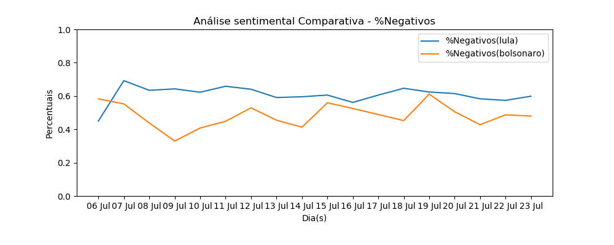

Resultados de análise sentimental de candidatos Eleições 2018
Comparativos Globais

Detalhamento
Obs:Os dados aqui expostos são frutos de trabalho de cunho acadêmico para validação de modelos de Deep Learning e Processamento de linguagens naturais. Não tendo NENHUM objetivo político partidário.